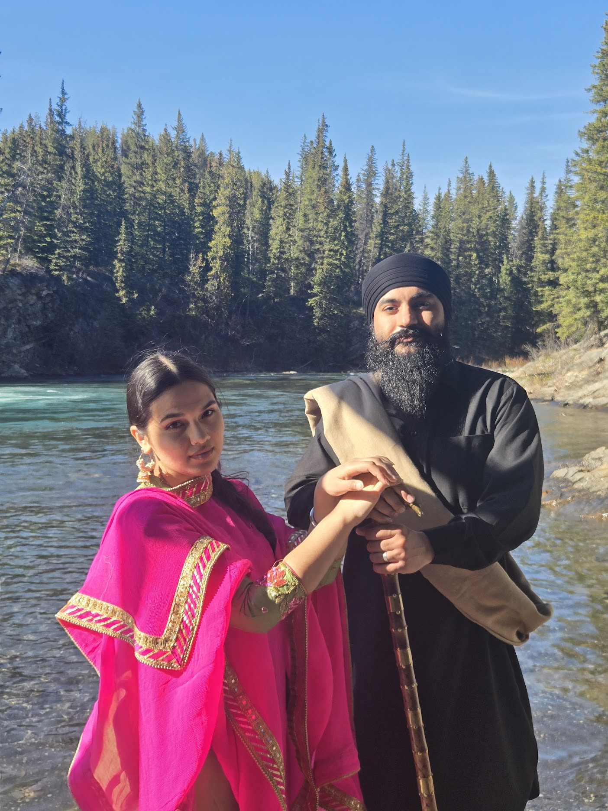

Welcome to My Wedding Spreadsheet
Hello! Our wedding dates are set for August 2026. This website will help our guests navigate the different customs, events, outfits, and tones associated with each event. I have a navigation bar at the top to help locate each section: my home page, events, outfits, and goals.

About Us
Jennifer and Harjodh are set to perform their Anand Karaj Ceremony on the 3rd of August 2026, and their Reception on the 4th of August 2026. The Anand Karaj Ceremony will take place in the main hall of the Gurdwara of Alberta, Canada. It will begin early in the morning, home departure events will being ay 9 am and everyone should be in the main hall by 11am, in modest wear. I'll go more into detail on that in the Anand Karaj tab. The Reception will be on the 4th later in the evening and will go deep into the night. less modest wear is required, something you can dance and move in. There are more details in the Reception tab as well.
Contact
If you’d like to reach out regarding any confusion, feel free to reach out to me through the contact form on the Contact page. I will also link some general Q&A's.